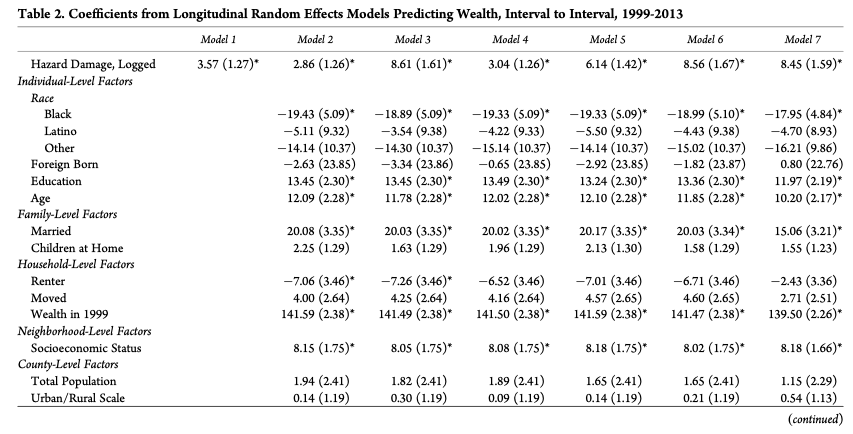
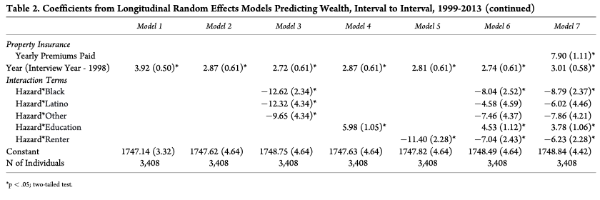
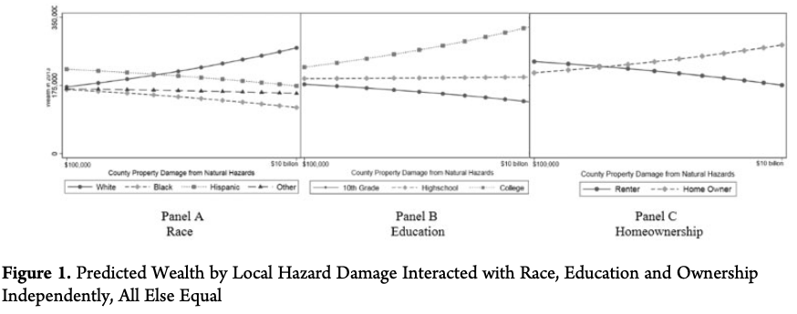
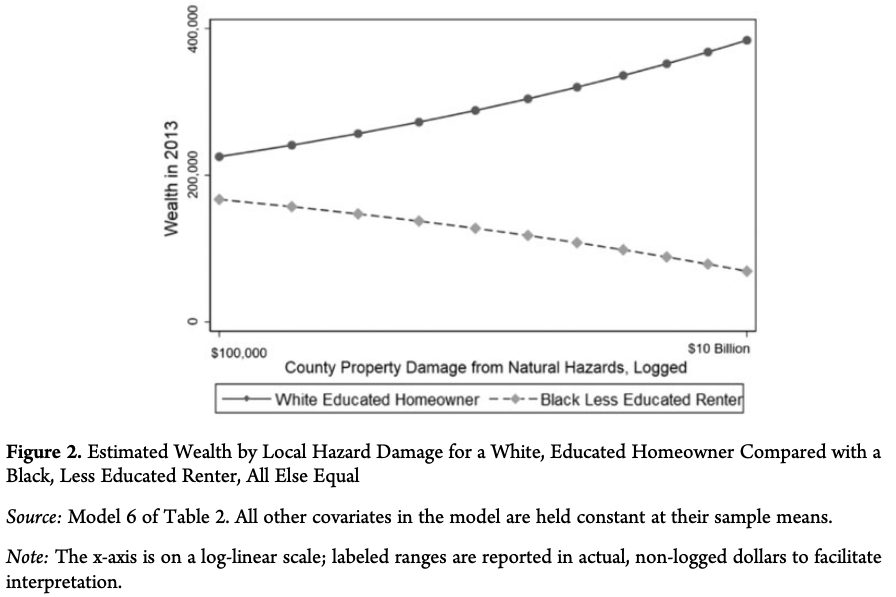
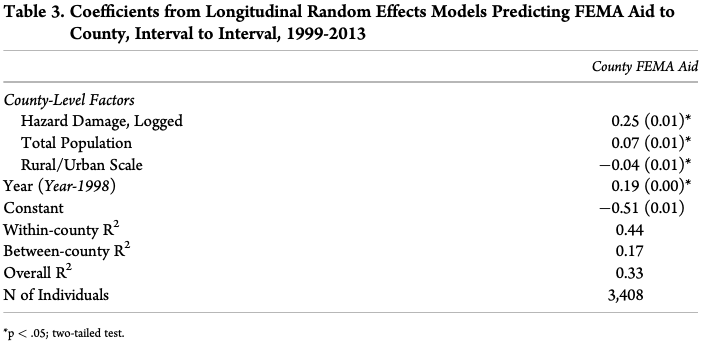
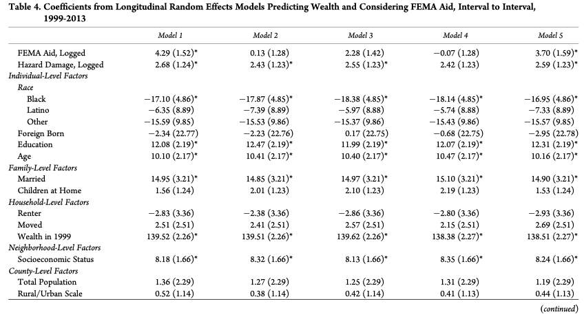
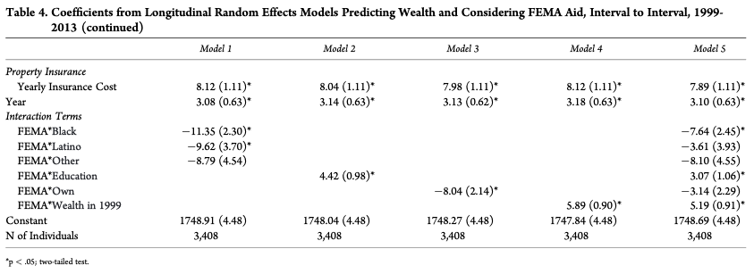
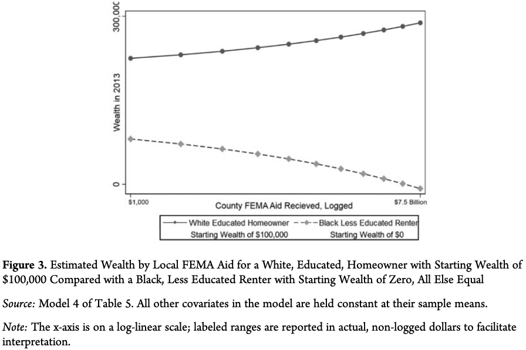

Complement
This complement aims to summarize in a detailed fashion the following article for our Macroeconomics 3 presentation.
Article : Junia Howell, James R. Elliott, Damages Done: The Longitudinal Impacts of Natural Hazards on Wealth Inequality in the United States, available here.
Introduction
There exists rising wealth inequality. Economic research tries to explain it by (1) income, (2) differential in Return on Investment (RoI), (3) policies. Without rejecting those approaches, this paper tries to use natural hazard damages to explain wealth inequality.
The main reasons to care about the effect of natural hazard on wealth inequalities are :
- Its scale : it is very costly,
- Its scope : 99,7% of the US counties have been affected by it since 2000,
- Its trajectory : with optimistic scenarios, the damages from natural hazards are projected to at least double (or quadruple) in 2050.
Research already showed tha poor people recover less than rich from natural hazard, even in relative terms. Also, research underlines the key role of recovery resources, and not only physical damages received. Globally, there is a consensus on this literature about the importance of the relationships between natural hazard and pre-existing social inequalities, and not studying natural hazards alone.
Wealth inequality
The authors point out that U.S. wealth inequalities have exploded recently, and define three ways of wealth accumulation :
- Wages in the short term,
- Investment (linked to RoI) in the long term,
- Intergenerational transfers at the life term.
Given that wealth has major effect on several other variables, such as (1) education performances, education inequalities, (2) physical health, and (3) emotional well-being, it is a crucial matter. They also recall that income and wages have strongly decreased for middle and low wage workes. For Investment and Long term factors of wealth accumulaition, the authors point out the role of the real estate markets in the increase of inequalities. Finally, the differences of interest rates on loans have strongly risen, especially with the 2008 crisis that affected poor people more strongly. Globally, wealth inequality has strongly increased at the extremities of the wealth distribution, and policies have participated to increasing inequality.
Natural Hazard and Wealth Inequality
In this paper, they put the focus on natural hazard with physical damage on property and assets, which can be public or private. Historically, they identify the year of 1755, with the earthbreak in Lisboa, as the begin of the development of an answer from the State. In the US, the public action in insurance against natural hazard begins in the early 1800s, with 1803 tariffs to help victimes of fire damages. In 1811 and 1812, lands are freely given to victims of displacement, and in the 1830s, there exists a de facto policy of federal disaster assistance. In 1950, the Disaster Relief Act (DRA) is the main milestone for the natural hazard protection policy in the US. It allows for :
- Immediate relief (through housing for example),
- Hazard insurance programs,
- Rebuilding damaged infrastructure,
- Low-interest loans.
Under other institutions, the authors identify the Federal Emergency Management Agency (FEMA) as a key one. It is responsible for redistribution of money in natural hazard periods. They also mention the existence of the National Flood Insurance Program (NFIP), which is currently the biggest hazard insurer of the US.
The author underline the fact that private and public assistance are focused on restoration of property and wealth, which implies differences in recovery rate and quality in function of the initial wealth of the insured people. Also, they point out that poor and non-property owners people are more exposed to risks after natural hazards such as :
- Job loss,
- Having to move (displacement),
- Having to pay a higher rent,
- Experimenting a decrease in savings.
They also mention that in some cases, there is often a reduction or a suspension in working conditions protection policies after natural hazards, and they give the example of regulation suspension after the hurricane Katrina.
Research Design
The authors then present their research design. They use panel data to study the effect of hazards damages on wealth distribution. This effect differs in function of the considered populations, and vary especially strongly when race, education level, and ownership are considered. They also want to test two hypothesis :
- Private insurance does not totally prevent increase in wealth inequality from hazards damages.
- The FEMA aid (in net terms) differs in population and contributes to wealth inequality.
Data
The authors now present the used data. They begin with the Panel Study of Income Dynamics (PSID), a panel dataset that track US families from a “representative sample” from 1968 to now, with information on county and neighbourhood information. They also use the Spatial Hazard Events and Losses Database (SHELD), that is maintained by the Hazards and Vulnerability Research Institute (HVRI) since 1960 until now. In this dataset, 18 types of natural hazards and their link with (1) fatalities and (2) property damages, are taken into account. They also make use of the Devennial Census Long form for contextualizationn, and finally use the FEMA Projects Summary to take into account the FEMA aid.
Measurement
Wealth Trajectories
For their model, they take the definition of Wealth as defined in the PSID dataset, where it is the sum, at the close family level, of :
- Saving accounts,
- Checking accounts,
- Real estate holdings,
- Equity,
- Vehicles,
- Farms,
- Businesses,
- Stocks,
- Annuities / IRAs,
- Minus all reported debts.
The distribution they get of the wealth is right-skewed, i.e. inflated by the very rich. To work with the data, they added a “global minimum” to all raw data, to avoid negative values due to debts, and used the squared root to compress the different wealth levels. Finally, they transformed the data to get a normal distribution.

Natural Hazard Damages
In the SHELD dataset, the natural hazards damages correspond to the “direct damage to (non-crop) property” (p.454) variable, in dollars. They standardize it to the 2012 U.S. dollar value, and apply the natural log to get the levels of damages, due to the initial distribution being very right-skewed.
Other Key Variables
The authors underline the fact that some other key variables have to be taken into account. They identify three main dimensions of social stratification :
- Race (4 mutually exclusive categories : white, black, latino (or hispanic), and “other”),
- Education (in number of total years of school completed),
- Homeowner status (1 or 0).
To get the private insurance investment, they compute the sum of all premia paid for home and car coverage during the interview year. They point out that this level of data precision is not ideal, since different insurance plans could provoke very different reactions to hazard damages.
To get the Federal Assistance variable, they sum the non fire related FEMA aids. Here the authors detail a bit the process to get this help : First, when a natural hazard is too big to be handled by the county or the state, they ask the federal authorities. If the President declare the existence of a major disaster, the FEMA then takes action and proceed to money transfers and other kinds of help, such as : financial help, temporary housing, house voucher, uninsured personal needs, and sometimes even direct replacement of private property.
Control Variables
They also include several control variables, at three main levels : the individual, the neighhorhood, and the population. The individual level variables are :
- Age,
- Foreign birth,
- Marital status,
- Number of children under 18 years old who are living within the household,
- If the individuals have moved in the last two years.
The variables at the neighborhood level are :
- The median income of the neighborhood,
- The number of adults with at least a bachelor degree,
- The number of adults currently employed.
Finally, the variables at the population level are :
- The total population,
- The urban-rural variable from 1 to 9, with one representing the most urban, and 9 the most rural.
Sampling and Modeling
Historically, the choice of following the “head of the household” led to only men in the samples, which biased the data from the difference in marital status. The author did run one model per gender in the household, but due to very similar results, they only present the female model with at least four over seven interviews.
Results
The authors first mention the difference in aid against natural hazard damage between 1991-2001 and 2005-2007, showing a clear increase from $237 millions to $1,15 billion. Also, they mention that important disparities exist between some counties are especially affected by the phenomenon, giving the Linn County, in Iowa as an example.
Natural Hazard Damages and Wealth Inequality
They then refer to Table 2. This table presents several models that try to explain wealth by multiple variables, depending on the model. They first talk about the first model, that only takes the level of hazard damage and the year of the regression as explaning factors. In the second model, they include all the control variables mentioned previously, and they mention that the race variables have a clear negative effect on wealth.
 
In the third model, they also include interaction between hazard and race variables. The effects of those interaction effects are strong and significant. The way to interpret them could be : for a Black person, being affected by a one percent hazard damage increase explains a wealth decrease of 0.1262% in wealth accumulation from one period to the next one. We can see graphically the effect of the race variable in the Panel A.
The authors then test for the effect of education in the next model. The panel B is a projection of the model that takes into account the education variable. On the x-axis is County Property Damage from Natural Hazards, and on the y-axis, there is “Wealth in 2013”. We can see the three panels of Figure 1 as answering the question : for a certain level of natural hazard damage, how much wealthy is a certain subgroup of the population ? We see clearly that less educated people are poorer and this wealth inequality is increasing with the amount of natural damage the county went through.
In the fifth Model, they take into consideration the homeownership. The interaction effects are done with the renter status. Similarly for race and education, they also find a positive relationship between homeownership and are richer in zones that are more exposed to natural hazards.

Testing all the variables, the authors find that the ones that cause the biggest wealth gap are race, education, and homeownership. They affirm that the difference of natural hazards effects on people mainly depend on those three variables. In the FIgure 2, they compare the wealth trajectory of an educated White owner and a 10-th grade Black renter.

Finally, in the last model, the authors also include privae insurance. First, they find that more private insurance predicts a bigger wealth accumulation, and seems therefore to confirm that it does bring larger payouts due to a better coverage. Secondly, including private insurance does not reduce the effect of the other three main factors (race, education, homeownership). In this sense, private insurance does not totally prevent wealth inequality increase due to natural hazards.
FEMA Aid and Wealth Inequality
Following the inclusion of private insurance test, they also include the FEMA aid. Their goal is to answer the question : Does the FEMA aid differ in function of wealth ? In Table 3, they try to explain the FEMA aid by hazard damge, controlling for total population, rurality scale and the year. They find that the effect exists, but is very weak, and not very robust. Therefore, they rerun the models (only five this time), but this time including the FEMA aid and private insurance premia.

The main conclusion one can draw from these models is that FEMA aid and wealth inequalities are positively linked. Also, Black and Latino people accumulate less when they live in counties that received a lot of FEMA aid, while the inverse is true for White people. The effect can be seen in the Interaction Terms of the Model 1. Each coefficient reflects the importance of belonging to the corresponding community and living in a county receiving FEMA aid from one period to another. In the second model, they take out race interaction terms, but take into account interaction term between FEMA and Education. In the third model, they include homeownership.
 
They also run the models with interaction effects between the FEMA and othe control variables. They find that : “the more wealth one has, the more one benefits from living in a county that receives more FEMA aid”. The authors advance that the FEMA aid “polarize wealth along racial, educational, and initial wealth lines, as evidenced by the statistically significant interaction coefficient” (pp.461-464). Then, in Figure 3, they reproduce the Figure 2, but with FEMA Aid in the x-axis instead of the hazard damages.

Conclusion
Wealth inequalities are explained by different elements, and this paper aims to show that natural hazards damages are one of them. The authors underly the importance of taking into account the interaction between natural hazards damages and pre-existing social dynamics, such as race, education, and ownership. In that way, they advance that we should think more about the policies managing environmental hazards. They recognize that the precise understanding on how natural hazards polarize wealth inequality is still incomplete and thus insist on further research. They advocate for taking the aid into consideration in the study of wealth inequalities (“equal aid is not equitable aid”, p.465).
They advocate for a more important taking into consideration of the interactions between social and environmental dynamics. For that, they advance that viewing the U.S. society as an inequal and heterogeneous group would be better in comparison to a monolitic group view. They make a reference to Stalling (2002), and re-underly the fact that natural hazards are more detrimental to socially marginalized groups. They therefore advance that the FEMA help should try to mitigate more this phenomenon, contrary to what is happening right now. They conclude by saying that the FEMA is necessary, but that we just have to rethink how aid is brought.